Chapter 4 KJ8
4.1 8.1
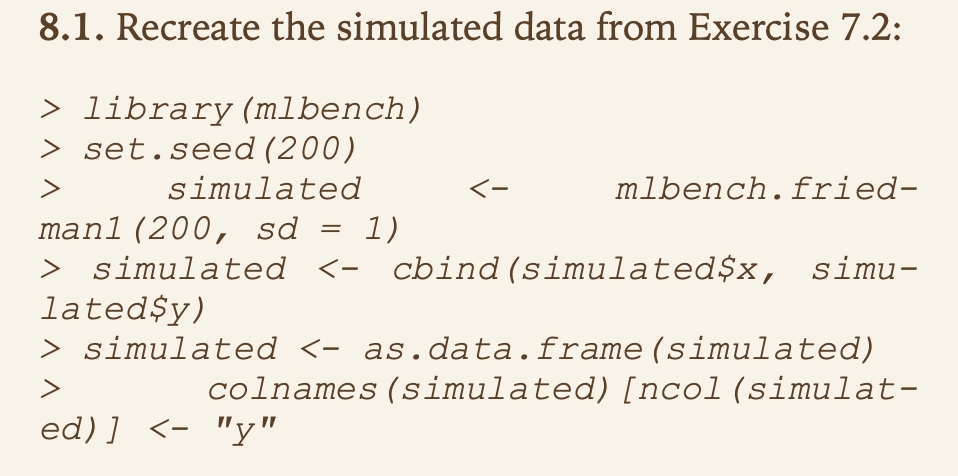
4.1.1 a

#Variable Importance
#V1 8.68958074
#V2 6.42965064
#V3 0.74711329
#V4 7.68699457
#V5 2.36904769
#V6 0.10997268
#V7 0.03083254
#V8 -0.10779418
#V9 -0.12814111
#V10 0.04895944Answer:
No, it didn’t. Variables 1-5 all had greater importance than variables 6-10, and consequently, would not have been used significantly in the model. Variables 8 and 9 have negative importance, which is really bad, as these are not helpful at all, and would be hurtful in fact towards having predictive value. A random variable would be better than these.
4.1.2 b
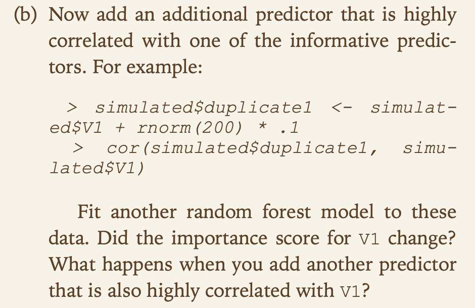
Answer:
Yes, the importance score drops from 8.69 to 6.02. The loss of V1 from the model is no longer as important as it was previously since there is another variable (duplicate1) that contains roughly the same information in it. Consequently, V1 is not as important.
#fit new model
model2 <- randomForest(y ~ ., data = simulated,
importance = TRUE,
ntree = 1000)
#importance
rfImp2 <- varImp(model2, scale = FALSE)
#V1 6.02363848
#V2 6.19154188
#V3 0.55277883
#V4 6.92793183
#V5 2.17101110
#V6 0.15369922
#V7 0.10720626
#V8 0.00929209
#V9 -0.05010858
#V10 0.03861636When you add another predictor that is also highly correlated with V1, the variable importance drops even further, from 6.02 down to 4.75. V1 is essentially sharing its importance with the highly correlated duplicate variables, and so it is no longer as important.
#new predictor
simulated$duplicate2 <- simulated$V1 + rnorm(200)* .1
cor(simulated$duplicate2, simulated$V1)
#0.9430605
#new model
model3 <- randomForest(y ~ ., data = simulated,
importance = TRUE,
ntree = 1000)
#importance
rfImp3 <- varImp(model3, scale = FALSE)
#V1 4.750274828
#V2 6.392645096
#V3 0.546932231
#V4 6.694197135
#V5 2.354901393
#V6 0.178559997
#V7 0.003137176
#V8 -0.067194296
#V9 -0.088150851
#V10 -0.040809537 4.1.3 c

Answer:
Using just the original values in simulated (V1-v10, not duplicate1 or duplicate 2), the variable importances are:
- rfImp1: 1, 4, 2, 5, 3, 6, 10, 7, 8, 9
- cfImp1: 1, 4, 2, 5, 7, 3, 6, 9, 10, 8
- cfImp1_con: 4, 1, 2, 5, 3, 6, 7, 9, 10, 8
They are almost the same in the ordering. 1, 4, 2, 5 are always in the top 4, and 1 and 4 are always in the top 2. V3 switches with 7 in the cforest cond = False model, but is really close in the magnitude of the importance.
The magnitudes are very similar between rfImp1 (9, 8, 6, 2 rounded) and cfImp1 (9, 8, 7, 2 rounded) for the first four variables. The conditional is a little bit different and the variable importance is less spread out (7, 6, 5, 2 rounded), but not too different.
In short, I’d say that they generally show the same pattern as the traditional random forest model for the original simulated data.
library(party)
#cforest
model1_cf <- cforest(y ~ ., data = simulated[,1:11],
control = cforest_unbiased(ntree = 1000)
)
#conditional and regular importance
cfImp1 <-data.frame(varimp(model1_cf, conditional = FALSE))
cfImp1_con <-data.frame(varimp(model1_cf, conditional = TRUE))If we include duplicate1, the variable importance order is:
- rfImp2: 4, 2, 1, duplicate1, 5, 3, 6, 7, 10, 8, 9
- cfImp2: 4, 1, 2, duplicate1, 5, 3, 7, 6, 10, 9, 8
- cfImp2_con: 4, 2, 1, 5, duplicate1, 3, 6, 10, 7, 8, 9
These are all roughly the same as 4, 2, 1 always take the top 3, duplicate1, 5, 3 take the next 3, and 6-10 take the rest. The magnitudes are also similar as before (rounded):
- rfImp2: 7, 6, 6, 3, 2, …
- cfImp2: 8, 7, 6, 2, 2, …
- cfImp2_con: 6, 5, 3, 1, 1, …
Again, this matches the pattern of the original simulated data.
#cforest model 2
model2_cf <- cforest(y ~ ., data = simulated[,1:12],
control = cforest_unbiased(ntree = 1000)
)
#importance
cfImp2 <-data.frame(varimp(model2_cf, conditional = FALSE))
cfImp2_con <-data.frame(varimp(model2_cf, conditional = TRUE))Finally, if we add duplicate2 as well, the order is:
- rfImp3: 4, 2, 1, duplicate2, duplicate1, 5, 3, 6, 7, 10, 8, 9
- cfImp3: 4, 2, 1, duplicate2, 5, duplicate1, 7, 3, 6, 9, 10, 8
- cfImp3_con: 4, 2, 1, 5, duplicate2, duplicate1, 3, 7, 6, 9, 8, 10
In magnitude:
- rfImp3: 7, 6, 5, 3, 3, …
- cfImp3: 7, 6, 5, 3, 2, …
- cfImp3_con: 6, 4, 2, 1, 1, …
This again generally matches the pattern.
#cforest model 3
model3_cf <- cforest(y ~ ., data = simulated[,1:13],
control = cforest_unbiased(ntree = 1000)
)
#importance 3
cfImp3 <-data.frame(varimp(model3_cf, conditional = FALSE))
cfImp3_con <-data.frame(varimp(model3_cf, conditional = TRUE))Even with the duplicated data, the variable importance, both in magnitude and in ordering, seems to show the same pattern as the traditional random forest model.
4.1.4 d
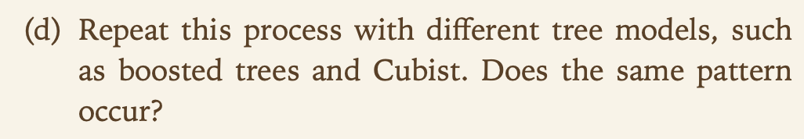
Answer:
With the gbm using 1000 trees, the variable importance generally matches the ordering, although the magnitude is on a different scale. Variables 1-5 are in the top 5 (where 4 and 1 are the top 2), and variables 6-10 are the bottom 5. The same holds true with the duplicated data.
- gbmImp1: 4, 1, 2, 5, 3, 7, 6, 9, 10, 8
- gbmImp2: 4, 2, 1, 5, 3, duplicate1, 7, 6, 8, 9, 10
- gbmImp3: 4, 2, 1, 5, 3, duplicate1, duplicate2, 7, 6, 8, 9, 10
#gbm
library(gbm)
#boosted 1
model1_gbm <- gbm(y~ ., data = simulated[,1:11],
distribution = "gaussian" #squared error
,n.trees = 1000)
gbmImp1 <-varImp(model1_gbm, scale = FALSE, numTrees = 1000)
#boosted 2
model2_gbm <- gbm(y~ ., data = simulated[,1:12],
distribution = "gaussian" #squared error
,n.trees = 1000)
gbmImp2 <-varImp(model2_gbm, scale = FALSE, numTrees = 1000)
#boosted 3
model3_gbm <- gbm(y~ ., data = simulated[,1:13],
distribution = "gaussian" #squared error
,n.trees = 1000)
gbmImp3 <-varImp(model3_gbm, scale = FALSE, numTrees = 1000)With the cubist model using 100 committees:
- cubistImp1: 1, 2, 4, 3, 5, 6, 7, 8, 9, 10
- cubistImp2: 1, 2, 4, 3, 5, 6, 7, 8, 9, 10, duplicate1
- cubistImp3: 1, 2, 3, 4, 5, 6, duplicate2, duplicate1, 8, 7, 9, 10
The ordering is a little bit different from previous models. 1, 2, 4 are still the most important variables, but 4 is no longer trading off with 1 for most important variable, as 2 is considered more important. Still, variables 1-5 are in the top 5 while 6-10 are in the bottom 5. The duplicate values are mostly ignored.
#cubist
library(Cubist)
#cubist 1
model1_cubist <-cubist(x = simulated[,c(1:10)], y = simulated[,11], committees = 100)
cubistImp1 <- varImp(model1_cubist)
#cubist 2
model2_cubist <-cubist(x = simulated[,c(1:10,12)], y = simulated[,11], committees = 100)
cubistImp2 <- varImp(model2_cubist)
#cubist 3
model3_cubist <-cubist(x = simulated[,c(1:10, 12, 13)], y = simulated[,11], committees = 100)
cubistImp3 <- varImp(model3_cubist)Generally speaking, the variable importance is the same across these different kinds of tree models. There are some differences, but these appear to be relatively minor. The models all agree that variables 4, 2, and 1 are the most important, 5 and 3 are next, and then 6-10 follow.
The biggest difference is that randomForest, cforest, and gbm all tend to rank the duplicate values as being relatively important after the first 5 variables, whereas the cubist model appears to ignore these for the most part. This may be due to how the cubist model handles covariance.
4.2 8.2

Answer:
Tree bias refers to the fact that “predictors with a higher number of distinct values are favored over more granular predictors” (KJ 182). Kuhn and Johnson quote other authors that describe a scenario when this can occur:
- the data set has a mix of informative and noise variables
- the noise variables have more splits than the informative variables
- the noise variables then split the top nodes of the tree
Or put differently here (https://www.r-project.org/conferences/useR-2006/Abstracts/Strobl+Zeileis+Boulesteix+Hothorn.pdf):
- “When potential predictor variables vary in their number of categories, and thus in their number of potential cutpoints, those variables that provide more potential cutpoints are more likely to be selected by chance” (1).
The below code recreates this scenario. A y vector of 100 uniformly random values is created. Then 18 variables are created based on y, using an increasing number of cuts (from 3 to 20) in the data to generate successively more breakpoints. Noise is also added to each variable to make sure that it correlates less with y than the previous variable. For example, here is the correlation between y and each variable below:
y x_cut3 x_cut4 x_cut5 x_cut6 x_cut7 x_cut8 x_cut9
1.0000000 0.9460066 0.9456638 0.9247502 0.9173373 0.9034732 0.8950539 0.8838463
x_cut10 x_cut11 x_cut12 x_cut13 x_cut14 x_cut15 x_cut16 x_cut17
0.8361560 0.8292382 0.8242503 0.8238068 0.8164344 0.7971259 0.7966548 0.7737809
x_cut18 x_cut19 x_cut20
0.7586791 0.7344495 0.6945186 Once the variables are created, making sure that as the cuts increase the correlation with y decreases, then a tree is created. The top variable according to variable importance is then recorded. Doing the above 500 times produced a distribution of what variable was considered to be the most important according to the tree splitting.
The most important variable was cut 4. While slightly less correlated with y than cut 3, it was the most important variable 314 times, while cut 3 was only the top variable 73 times. Cuts 5 and 6 combined to have more variable importance occurrences (31 + 45 = 76) than cut 3 alone. Even cuts 7, 8, 9, 10, 11, 13, and 15 were most important at least once. This despite many of these variables being much less correlated with y than cut 3. See full table below, sorted by the number of times a variable was considered the most important:
x_cut4 x_cut3 x_cut6 x_cut5 x_cut7 x_cut8 x_cut10 x_cut9 x_cut11 x_cut15
314 73 45 31 13 9 7 3 2 2
x_cut13
1
Thus, it does seem that trees have a tendency to select variables that, though not as informative with respect to the y value being predicted, have more cutpoints and hence are deemed to be more important in the tree model.
library(rpart)
library(stringr)
#create empty variable importance vector
varImpVector <- c()
for(j in 1:500){
#start df and generate random y values
y <- runif(100, 0, 100)
df_8.2 <- data.frame(y)
cutNoise <- function(y, cuts, noise){
#get cuts and add noise
x <- as.character(cut(y + runif(100,0,noise), cuts))
x_adj <-as.numeric(substring(x, 2, str_locate(x,",")[,1]-1))
#round
x_final <- round(x_adj)
return(x_final)
}
for(i in 3:20){
#initialize variables
noise <- 0
if (i == 3){
x_temp<-cutNoise(y,i, noise)
cor <- 1
}
#add noise until correlation is less than previous variable
while (cor <= cor(y,x_temp)){
noise <- noise + 1
x_temp<-cutNoise(y,i, noise)
}
#get new baseline correlation
cor <- cor(y,x_temp)
#add to df
name_temp <- paste0("x_cut",i)
df_8.2$temp <-x_temp
names(df_8.2)[names(df_8.2)=="temp"] <- name_temp
}
#sort(cor(df_8.2)[,1], decreasing = TRUE)
#create tree
tree <-rpart(y ~ ., data = df_8.2 )
#get top variable importance and add to vector
varImpVector<-c(varImpVector, names(tree$variable.importance)[1])
}
#get counts of most important variable
table(varImpVector)[order(table(varImpVector), decreasing=TRUE)]4.3 8.3

4.3.1 a

Trees tend to form retangular regions in the vector space formed by the predictor values (figure 8.1, page 174). By setting the bagging fraction and the learning rate to 0.9 you have affectively increased the areas formed by the model for the most important predictors. This is becuase you are adding a larger fraction of the previous iteration’s prediction to the current interation’s prediction. This will tend to bias toward the most influential predictors.
4.3.2 b

Setting the learning fraction too high would tend to under-fit the model, leading to high bias in the bias-varaince balance. A learing rate of less than 0.01 is considered optimal (page 206), so the learning rate of 0.1 would make a more predictive model.
4.3.3 c

Increasing depth would decrease the slope of predcitor importance. A increased depth would have more possible outcomes, and with more possible predictions the iterative loop would progress more slowly. That is to say that each outcome’s effect would be lesser and the model would tend to a stable outcome over more iterations. The overall effect being an increase in the number of predictor importance which would mean that the slope of the predcitor importance would go down.
4.4 8.7
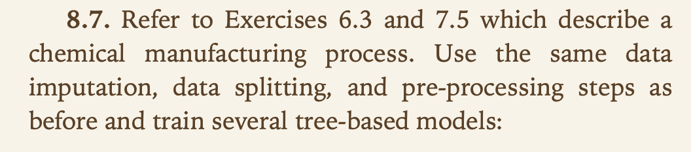
The matrix processPredictors contains the 57 predictors (12 describingthe input biological material and 45 describing the process predictors) for the 176 manufacturing runs. yield contains the percent yield for each run.
# removes outliers https://stackoverflow.com/questions/4787332/how-to-remove-outliers-from-a-dataset
ChemicalManufacturingProcess <- ChemicalManufacturingProcess[!ChemicalManufacturingProcess %in% boxplot.stats(ChemicalManufacturingProcess)$out]
# replace missing values and outliers with a KNN imputation
ChemicalManufacturingProcess <- ChemicalManufacturingProcess %>% knnImputation(k=5)
ChemicalManufacturingProcess %>% summary()## Yield BiologicalMaterial01 BiologicalMaterial02
## Min. :35.25 Min. :4.580 Min. :46.87
## 1st Qu.:38.75 1st Qu.:5.978 1st Qu.:52.68
## Median :39.97 Median :6.305 Median :55.09
## Mean :40.18 Mean :6.411 Mean :55.69
## 3rd Qu.:41.48 3rd Qu.:6.870 3rd Qu.:58.74
## Max. :46.34 Max. :8.810 Max. :64.75
## BiologicalMaterial03 BiologicalMaterial04 BiologicalMaterial05
## Min. :56.97 Min. : 9.38 Min. :13.24
## 1st Qu.:64.98 1st Qu.:11.24 1st Qu.:17.23
## Median :67.22 Median :12.10 Median :18.49
## Mean :67.70 Mean :12.35 Mean :18.60
## 3rd Qu.:70.43 3rd Qu.:13.22 3rd Qu.:19.90
## Max. :78.25 Max. :23.09 Max. :24.85
## BiologicalMaterial06 BiologicalMaterial07 BiologicalMaterial08
## Min. :40.60 Min. :100.0 Min. :15.88
## 1st Qu.:46.05 1st Qu.:100.0 1st Qu.:17.06
## Median :48.46 Median :100.0 Median :17.51
## Mean :48.91 Mean :100.0 Mean :17.49
## 3rd Qu.:51.34 3rd Qu.:100.0 3rd Qu.:17.88
## Max. :59.38 Max. :100.8 Max. :19.14
## BiologicalMaterial09 BiologicalMaterial10 BiologicalMaterial11
## Min. :11.44 Min. :1.770 Min. :135.8
## 1st Qu.:12.60 1st Qu.:2.460 1st Qu.:143.8
## Median :12.84 Median :2.710 Median :146.1
## Mean :12.85 Mean :2.801 Mean :147.0
## 3rd Qu.:13.13 3rd Qu.:2.990 3rd Qu.:149.6
## Max. :14.08 Max. :6.870 Max. :158.7
## BiologicalMaterial12 ManufacturingProcess01 ManufacturingProcess02
## Min. :18.35 Min. : 0.00 Min. : 0.00
## 1st Qu.:19.73 1st Qu.:10.80 1st Qu.:19.30
## Median :20.12 Median :11.40 Median :21.00
## Mean :20.20 Mean :11.21 Mean :16.76
## 3rd Qu.:20.75 3rd Qu.:12.12 3rd Qu.:21.50
## Max. :22.21 Max. :14.10 Max. :22.50
## ManufacturingProcess03 ManufacturingProcess04 ManufacturingProcess05
## Min. :1.470 Min. :911.0 Min. : 923.0
## 1st Qu.:1.530 1st Qu.:928.0 1st Qu.: 986.8
## Median :1.548 Median :934.0 Median : 999.0
## Mean :1.541 Mean :931.9 Mean :1001.6
## 3rd Qu.:1.550 3rd Qu.:936.0 3rd Qu.:1008.7
## Max. :1.600 Max. :946.0 Max. :1175.3
## ManufacturingProcess06 ManufacturingProcess07 ManufacturingProcess08
## Min. :203.0 Min. :177.0 Min. :177.0
## 1st Qu.:205.7 1st Qu.:177.0 1st Qu.:177.0
## Median :206.8 Median :177.0 Median :178.0
## Mean :207.4 Mean :177.5 Mean :177.6
## 3rd Qu.:208.7 3rd Qu.:178.0 3rd Qu.:178.0
## Max. :227.4 Max. :178.0 Max. :178.0
## ManufacturingProcess09 ManufacturingProcess10 ManufacturingProcess11
## Min. :38.89 Min. : 7.500 Min. : 7.500
## 1st Qu.:44.89 1st Qu.: 8.700 1st Qu.: 9.000
## Median :45.73 Median : 9.100 Median : 9.400
## Mean :45.66 Mean : 9.193 Mean : 9.406
## 3rd Qu.:46.52 3rd Qu.: 9.600 3rd Qu.: 9.900
## Max. :49.36 Max. :11.600 Max. :11.500
## ManufacturingProcess12 ManufacturingProcess13 ManufacturingProcess14
## Min. : 0.0 Min. :32.10 Min. :4701
## 1st Qu.: 0.0 1st Qu.:33.90 1st Qu.:4827
## Median : 0.0 Median :34.60 Median :4856
## Mean : 852.9 Mean :34.51 Mean :4854
## 3rd Qu.: 0.0 3rd Qu.:35.20 3rd Qu.:4882
## Max. :4549.0 Max. :38.60 Max. :5055
## ManufacturingProcess15 ManufacturingProcess16 ManufacturingProcess17
## Min. :5904 Min. : 0 Min. :31.30
## 1st Qu.:6010 1st Qu.:4561 1st Qu.:33.50
## Median :6032 Median :4588 Median :34.40
## Mean :6039 Mean :4566 Mean :34.34
## 3rd Qu.:6061 3rd Qu.:4619 3rd Qu.:35.10
## Max. :6233 Max. :4852 Max. :40.00
## ManufacturingProcess18 ManufacturingProcess19 ManufacturingProcess20
## Min. : 0 Min. :5890 Min. : 0
## 1st Qu.:4813 1st Qu.:6001 1st Qu.:4553
## Median :4835 Median :6022 Median :4582
## Mean :4810 Mean :6028 Mean :4556
## 3rd Qu.:4862 3rd Qu.:6050 3rd Qu.:4610
## Max. :4971 Max. :6146 Max. :4759
## ManufacturingProcess21 ManufacturingProcess22 ManufacturingProcess23
## Min. :-1.8000 Min. : 0.000 Min. :0.000
## 1st Qu.:-0.6000 1st Qu.: 3.000 1st Qu.:2.000
## Median :-0.3000 Median : 5.000 Median :3.000
## Mean :-0.1642 Mean : 5.409 Mean :3.025
## 3rd Qu.: 0.0000 3rd Qu.: 8.000 3rd Qu.:4.000
## Max. : 3.6000 Max. :12.000 Max. :6.000
## ManufacturingProcess24 ManufacturingProcess25 ManufacturingProcess26
## Min. : 0.000 Min. : 0 Min. : 0
## 1st Qu.: 4.000 1st Qu.:4829 1st Qu.:6019
## Median : 8.000 Median :4854 Median :6045
## Mean : 8.859 Mean :4828 Mean :6016
## 3rd Qu.:14.000 3rd Qu.:4876 3rd Qu.:6069
## Max. :23.000 Max. :4990 Max. :6161
## ManufacturingProcess27 ManufacturingProcess28 ManufacturingProcess29
## Min. : 0 Min. : 0.000 Min. : 0.00
## 1st Qu.:4563 1st Qu.: 0.000 1st Qu.:19.70
## Median :4586 Median :10.400 Median :19.90
## Mean :4563 Mean : 6.441 Mean :20.01
## 3rd Qu.:4609 3rd Qu.:10.700 3rd Qu.:20.40
## Max. :4710 Max. :11.500 Max. :22.00
## ManufacturingProcess30 ManufacturingProcess31 ManufacturingProcess32
## Min. : 0.000 Min. : 0.00 Min. :143.0
## 1st Qu.: 8.800 1st Qu.:70.10 1st Qu.:155.0
## Median : 9.200 Median :70.80 Median :158.0
## Mean : 9.173 Mean :70.18 Mean :158.5
## 3rd Qu.: 9.700 3rd Qu.:71.40 3rd Qu.:162.0
## Max. :11.200 Max. :72.50 Max. :173.0
## ManufacturingProcess33 ManufacturingProcess34 ManufacturingProcess35
## Min. :56.00 Min. :2.300 Min. :463.0
## 1st Qu.:62.00 1st Qu.:2.500 1st Qu.:490.0
## Median :64.00 Median :2.500 Median :495.0
## Mean :63.52 Mean :2.493 Mean :495.3
## 3rd Qu.:65.00 3rd Qu.:2.500 3rd Qu.:501.0
## Max. :70.00 Max. :2.600 Max. :522.0
## ManufacturingProcess36 ManufacturingProcess37 ManufacturingProcess38
## Min. :0.01700 Min. :0.000 Min. :0.000
## 1st Qu.:0.01900 1st Qu.:0.700 1st Qu.:2.000
## Median :0.01941 Median :1.000 Median :3.000
## Mean :0.01956 Mean :1.014 Mean :2.534
## 3rd Qu.:0.02000 3rd Qu.:1.300 3rd Qu.:3.000
## Max. :0.02200 Max. :2.300 Max. :3.000
## ManufacturingProcess39 ManufacturingProcess40 ManufacturingProcess41
## Min. :0.000 Min. :0.0000 Min. :0.00000
## 1st Qu.:7.100 1st Qu.:0.0000 1st Qu.:0.00000
## Median :7.200 Median :0.0000 Median :0.00000
## Mean :6.851 Mean :0.0177 Mean :0.02367
## 3rd Qu.:7.300 3rd Qu.:0.0000 3rd Qu.:0.00000
## Max. :7.500 Max. :0.1000 Max. :0.20000
## ManufacturingProcess42 ManufacturingProcess43 ManufacturingProcess44
## Min. : 0.00 Min. : 0.0000 Min. :0.000
## 1st Qu.:11.40 1st Qu.: 0.6000 1st Qu.:1.800
## Median :11.60 Median : 0.8000 Median :1.900
## Mean :11.21 Mean : 0.9119 Mean :1.805
## 3rd Qu.:11.70 3rd Qu.: 1.0250 3rd Qu.:1.900
## Max. :12.10 Max. :11.0000 Max. :2.100
## ManufacturingProcess45
## Min. :0.000
## 1st Qu.:2.100
## Median :2.200
## Mean :2.138
## 3rd Qu.:2.300
## Max. :2.600ChemicalManufacturingProcess[,2:12]%>% chart.Correlation()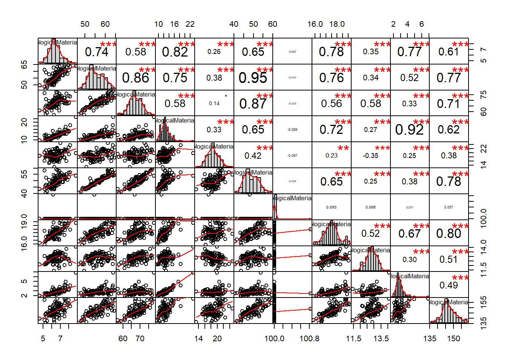
ChemicalManufacturingProcess[,13:23]%>% chart.Correlation()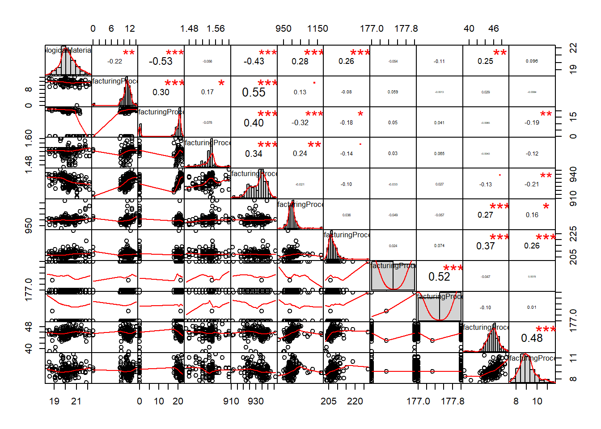
ChemicalManufacturingProcess[,24:34]%>% chart.Correlation()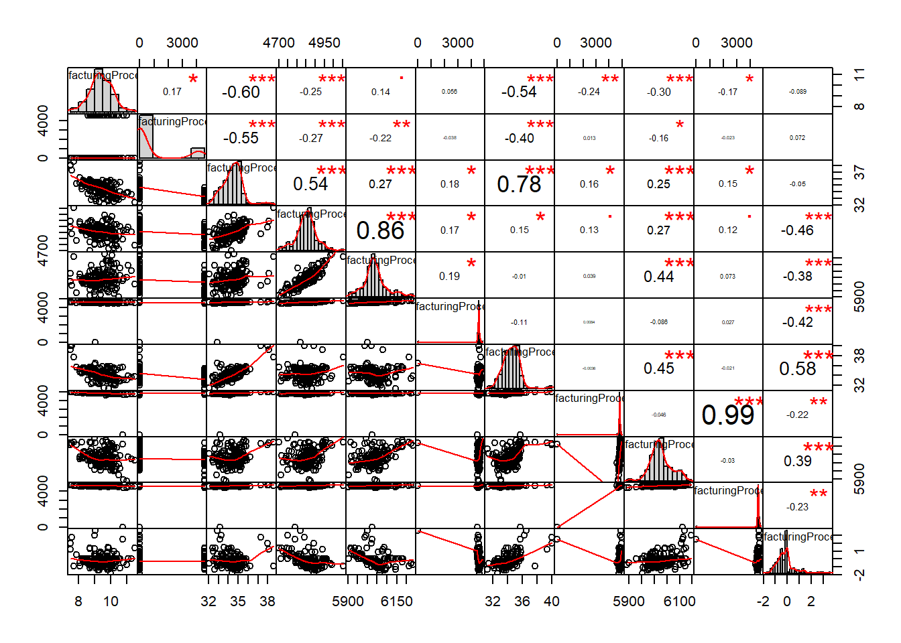
ChemicalManufacturingProcess[,35:45]%>% chart.Correlation()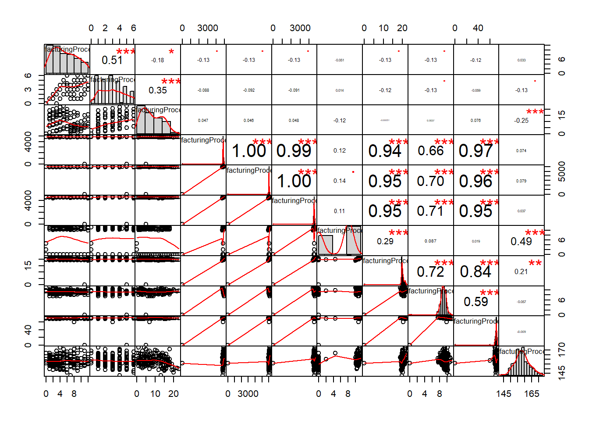
ChemicalManufacturingProcess[,46:58] %>% chart.Correlation()# rescale the data for the PLS
ChemicalManufacturingProcess <- ChemicalManufacturingProcess %>% mutate_all(funs(scale))
ChemicalManufacturingProcess[,2:12]%>% chart.Correlation()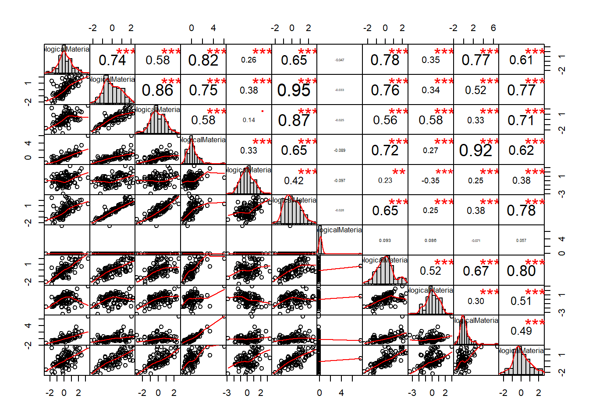
ChemicalManufacturingProcess[,13:23]%>% chart.Correlation()
ChemicalManufacturingProcess[,24:34]%>% chart.Correlation()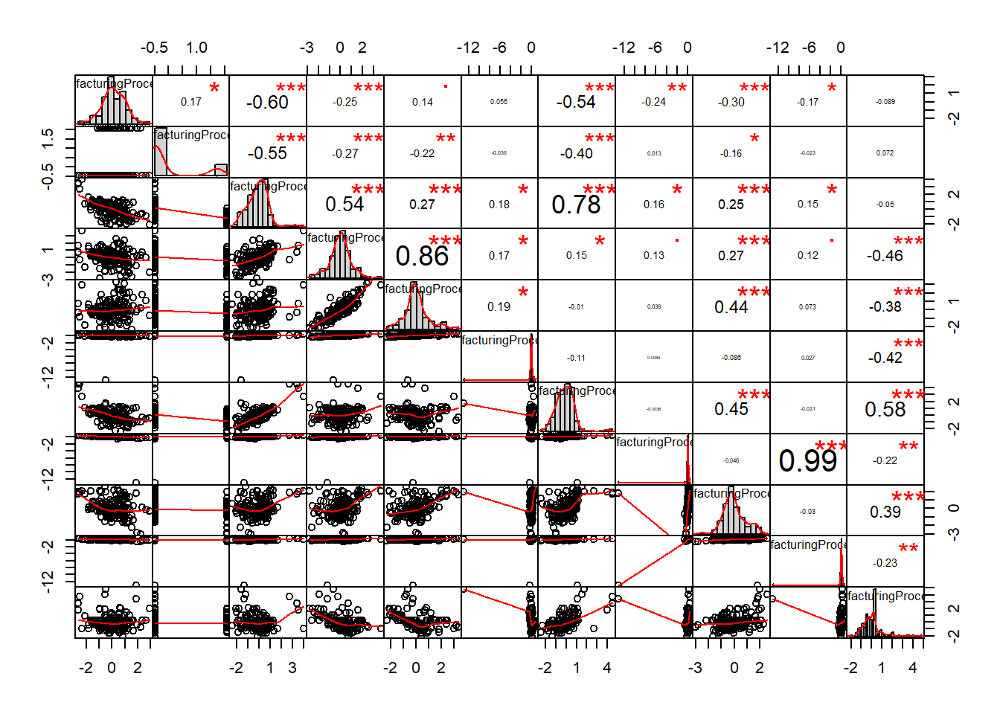
ChemicalManufacturingProcess[,35:45]%>% chart.Correlation()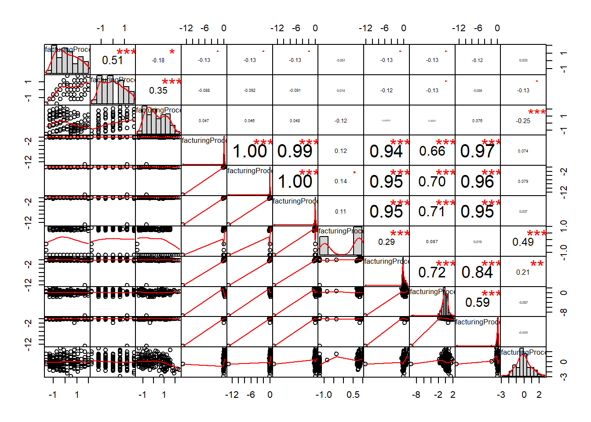
ChemicalManufacturingProcess[,46:58] %>% chart.Correlation()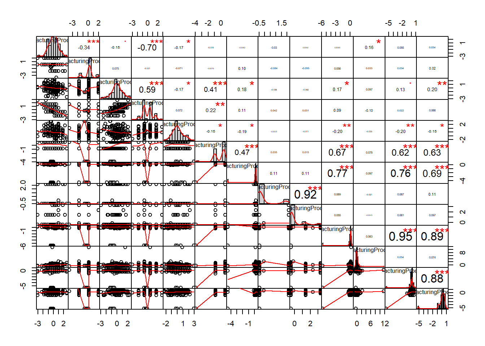
# Now I will use a 5x Cross Validation
smp_size <- floor(0.75 * nrow(ChemicalManufacturingProcess))
library(Metrics)
## set the seed to make your partition reproducible
for(i in c(40:44)){
set.seed(i)
train_ind <- sample(seq_len(nrow(ChemicalManufacturingProcess)), size = smp_size)
train <- ChemicalManufacturingProcess[train_ind,]
test <- ChemicalManufacturingProcess[-train_ind,]
x = train[,2:58]
anv <- rpart(
formula = Yield ~ .,
data = train,
method = "anova"
)
anv %>% print()
plotcp(anv)
rpart.plot(anv)
pred<- predict(object = anv, newdata = test)
rmse(test$Yield,pred) %>% print()
}## n= 132
##
## node), split, n, deviance, yval
## * denotes terminal node
##
## 1) root 132 131.6106000 0.0002360156
## 2) ManufacturingProcess32< 0.006316353 71 33.2375300 -0.5930445000
## 4) BiologicalMaterial11< -0.2879764 35 8.9004920 -0.9893243000
## 8) ManufacturingProcess09< -0.384828 18 2.4559370 -1.2810070000 *
## 9) ManufacturingProcess09>=-0.384828 17 3.2916320 -0.6804837000 *
## 5) BiologicalMaterial11>=-0.2879764 36 13.4970700 -0.2077724000
## 10) ManufacturingProcess17>=-0.5157403 24 3.9998420 -0.4857509000
## 20) BiologicalMaterial01< -0.02300033 9 0.6806887 -0.8096327000 *
## 21) BiologicalMaterial01>=-0.02300033 15 1.8086020 -0.2914218000 *
## 11) ManufacturingProcess17< -0.5157403 12 3.9336420 0.3481846000 *
## 3) ManufacturingProcess32>=0.006316353 61 44.2948100 0.6907756000
## 6) ManufacturingProcess06< 0.2293515 35 25.5688800 0.3107094000
## 12) BiologicalMaterial03< -0.2724275 11 4.9243730 -0.2852813000 *
## 13) BiologicalMaterial03>=-0.2724275 24 14.9464300 0.5838718000
## 26) BiologicalMaterial11>=0.1414423 13 5.3189640 0.1544181000 *
## 27) BiologicalMaterial11< 0.1414423 11 4.3963480 1.0914080000 *
## 7) ManufacturingProcess06>=0.2293515 26 6.8643300 1.2024030000
## 14) ManufacturingProcess17>=-1.31689 19 3.5181480 1.0301760000 *
## 15) ManufacturingProcess17< -1.31689 7 1.2528710 1.6698780000 *

## [1] 0.7599641
## n= 132
##
## node), split, n, deviance, yval
## * denotes terminal node
##
## 1) root 132 143.3556000 0.008568392
## 2) ManufacturingProcess32< 0.191596 77 44.6517500 -0.532191700
## 4) BiologicalMaterial12< -0.6009825 29 12.2941200 -1.019340000
## 8) BiologicalMaterial05>=0.5782442 7 1.4482800 -1.795382000 *
## 9) BiologicalMaterial05< 0.5782442 22 5.2887900 -0.772417500
## 18) BiologicalMaterial05< -0.2134524 11 0.8140624 -1.082234000 *
## 19) BiologicalMaterial05>=-0.2134524 11 2.3630280 -0.462600800 *
## 5) BiologicalMaterial12>=-0.6009825 48 21.3176100 -0.237872900
## 10) ManufacturingProcess25>=-0.01512975 36 8.4931420 -0.490567000
## 20) BiologicalMaterial04< -0.3545812 11 0.8835555 -0.890630500 *
## 21) BiologicalMaterial04>=-0.3545812 25 5.0743810 -0.314539000
## 42) BiologicalMaterial12>=0.60774 7 0.2864453 -0.726469200 *
## 43) BiologicalMaterial12< 0.60774 18 3.1382060 -0.154343900 *
## 11) ManufacturingProcess25< -0.01512975 12 3.6294500 0.520209200 *
## 3) ManufacturingProcess32>=0.191596 55 44.6644000 0.765632500
## 6) ManufacturingProcess06< 0.2665302 33 21.7973000 0.377696800
## 12) ManufacturingProcess44< 0.139396 11 5.2073310 -0.150321400 *
## 13) ManufacturingProcess44>=0.139396 22 11.9897200 0.641705900
## 26) ManufacturingProcess43>=-0.07135117 13 4.3246710 0.286119600 *
## 27) ManufacturingProcess43< -0.07135117 9 3.6470120 1.155331000 *
## 7) ManufacturingProcess06>=0.2665302 22 10.4513300 1.347536000
## 14) ManufacturingProcess17>=-0.7160277 11 1.9247460 0.905222400 *
## 15) ManufacturingProcess17< -0.7160277 11 4.2224760 1.789850000 *

## [1] 0.7078128
## n= 132
##
## node), split, n, deviance, yval
## * denotes terminal node
##
## 1) root 132 138.1490000 0.0008927547
## 2) ManufacturingProcess32< 0.191596 78 45.5781200 -0.5070065000
## 4) BiologicalMaterial12< -0.6009825 34 13.8864600 -0.9787977000
## 8) BiologicalMaterial05>=0.5429974 9 1.9404170 -1.6705080000 *
## 9) BiologicalMaterial05< 0.5429974 25 6.0896490 -0.7297820000
## 18) ManufacturingProcess39>=0.1985153 18 2.4887760 -0.9252188000 *
## 19) ManufacturingProcess39< 0.1985153 7 1.1454460 -0.2272302000 *
## 5) BiologicalMaterial12>=-0.6009825 44 18.2757400 -0.1424405000
## 10) ManufacturingProcess25>=-0.01105487 32 9.1289970 -0.3797594000
## 20) ManufacturingProcess17>=-0.5557977 23 3.3912740 -0.5759740000
## 40) ManufacturingProcess21< -0.1744786 8 0.1915758 -0.9381620000 *
## 41) ManufacturingProcess21>=-0.1744786 15 1.5905550 -0.3828070000 *
## 21) ManufacturingProcess17< -0.5557977 9 2.5892640 0.1216780000 *
## 11) ManufacturingProcess25< -0.01105487 12 2.5385020 0.4904096000 *
## 3) ManufacturingProcess32>=0.191596 54 43.3861800 0.7345250000
## 6) ManufacturingProcess06< -0.4026855 20 11.3134500 0.1557518000
## 12) ManufacturingProcess19>=0.07242738 13 5.8319140 -0.1364920000 *
## 13) ManufacturingProcess19< 0.07242738 7 2.3092930 0.6984904000 *
## 7) ManufacturingProcess06>=-0.4026855 34 21.4322400 1.0749800000
## 14) ManufacturingProcess24>=0.1106758 12 2.5297120 0.4610616000 *
## 15) ManufacturingProcess24< 0.1106758 22 11.9128300 1.4098440000
## 30) ManufacturingProcess14< -0.4255021 7 3.3135290 0.8532931000 *
## 31) ManufacturingProcess14>=-0.4255021 15 5.4192060 1.6695680000 * 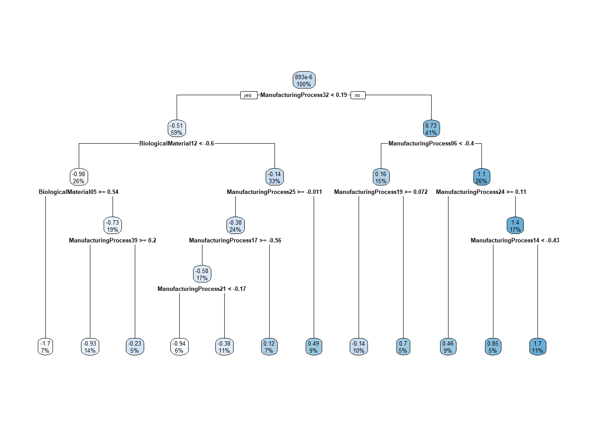
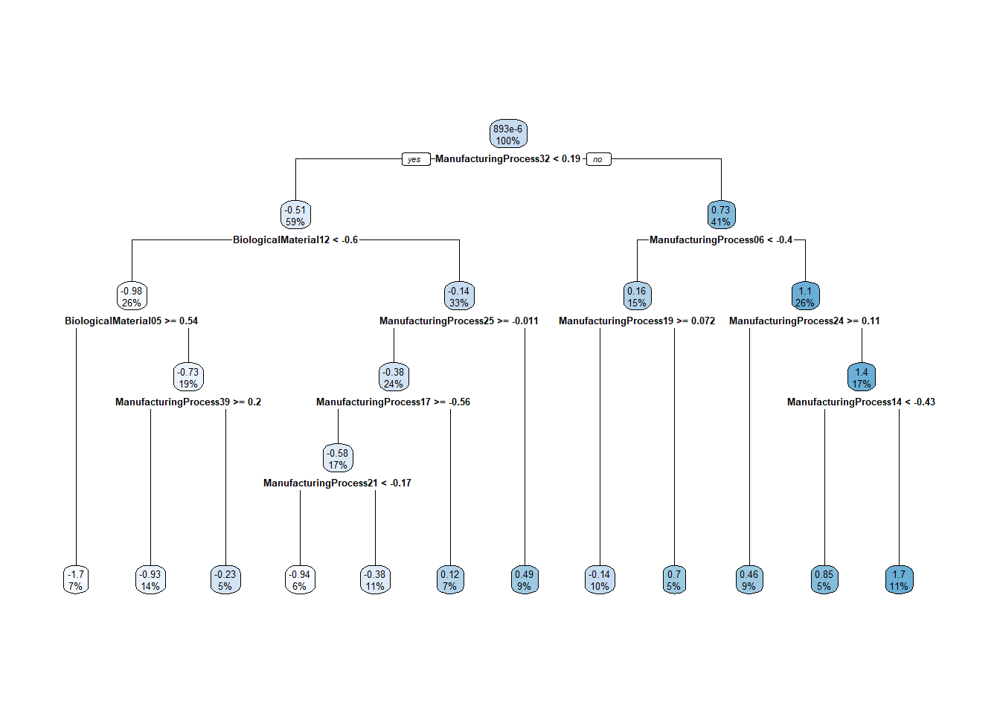
## [1] 0.776217
## n= 132
##
## node), split, n, deviance, yval
## * denotes terminal node
##
## 1) root 132 130.691300 0.07128697
## 2) ManufacturingProcess32< 0.191596 72 40.921820 -0.46453000
## 4) BiologicalMaterial11< -0.3896263 30 10.520390 -0.92588100
## 8) ManufacturingProcess13>=0.7308776 7 2.060876 -1.61968100 *
## 9) ManufacturingProcess13< 0.7308776 23 4.064496 -0.71472440 *
## 5) BiologicalMaterial11>=-0.3896263 42 19.455130 -0.13499360
## 10) ManufacturingProcess18>=0.02943901 24 5.928281 -0.47197990
## 20) ManufacturingProcess27>=0.0605029 12 1.348044 -0.71918060 *
## 21) ManufacturingProcess27< 0.0605029 12 3.113640 -0.22477920 *
## 11) ManufacturingProcess18< 0.02943901 18 7.167507 0.31432150 *
## 3) ManufacturingProcess32>=0.191596 60 44.292850 0.71426730
## 6) ManufacturingProcess06< 0.3966554 35 18.666880 0.32618970
## 12) BiologicalMaterial03< -0.2749269 8 3.372183 -0.38890240 *
## 13) BiologicalMaterial03>=-0.2749269 27 9.991737 0.53806880
## 26) ManufacturingProcess01< -0.3629077 9 1.548341 0.09940361 *
## 27) ManufacturingProcess01>=-0.3629077 18 5.845629 0.75740140 *
## 7) ManufacturingProcess06>=0.3966554 25 12.975210 1.25757600
## 14) ManufacturingProcess17>=-0.7160277 16 3.936228 0.91076370 *
## 15) ManufacturingProcess17< -0.7160277 9 3.693257 1.87413100 *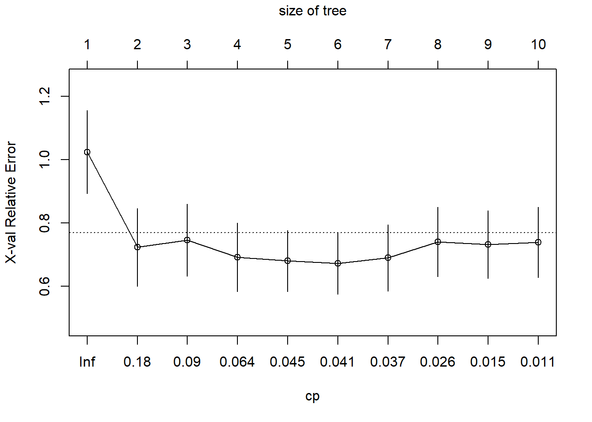
## [1] 0.7808083
## n= 132
##
## node), split, n, deviance, yval
## * denotes terminal node
##
## 1) root 132 141.304700 -0.03067177
## 2) ManufacturingProcess32< 0.191596 74 38.216990 -0.62596250
## 4) BiologicalMaterial12< -0.6009825 27 10.050260 -1.12829700
## 8) BiologicalMaterial05>=0.4182781 7 1.604084 -1.77448400 *
## 9) BiologicalMaterial05< 0.4182781 20 4.500257 -0.90213170
## 18) ManufacturingProcess27< 0.1077943 12 1.096054 -1.14179200 *
## 19) ManufacturingProcess27>=0.1077943 8 1.681088 -0.54264090 *
## 5) BiologicalMaterial12>=-0.6009825 47 17.439600 -0.33738720
## 10) ManufacturingProcess25>=-0.005941743 35 6.022888 -0.57197600 *
## 11) ManufacturingProcess25< -0.005941743 12 3.872751 0.34683010 *
## 3) ManufacturingProcess32>=0.191596 58 43.406690 0.72883700
## 6) ManufacturingProcess06< 0.2665302 31 16.398770 0.29323170
## 12) ManufacturingProcess19>=0.2918287 12 6.345780 -0.12815650 *
## 13) ManufacturingProcess19< 0.2918287 19 6.576392 0.55937150 *
## 7) ManufacturingProcess06>=0.2665302 27 14.371850 1.22897700
## 14) ManufacturingProcess17>=-0.5157403 15 3.758706 0.79544850 *
## 15) ManufacturingProcess17< -0.5157403 12 4.269945 1.77088700 *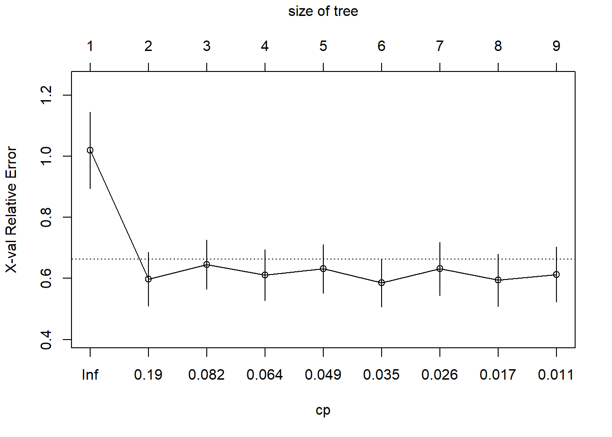
## [1] 0.7931443# Now I will use a 5x Cross Validation
smp_size <- floor(0.75 * nrow(ChemicalManufacturingProcess))
library(Metrics)
## set the seed to make your partition reproducible
for(i in c(40:44)){
set.seed(i)
train_ind <- sample(seq_len(nrow(ChemicalManufacturingProcess)), size = smp_size)
train <- ChemicalManufacturingProcess[train_ind,]
test <- ChemicalManufacturingProcess[-train_ind,]
anv <- rpart(
formula = Yield ~ .,
data = train,
method = "anova"
)
#from datacamp https://campus.datacamp.com/courses/machine-learning-with-tree-based-models-in-r/regression-trees
opt_index <- which.min(anv$cptable[, "xerror"])
cp_opt <- anv$cptable[opt_index, "CP"]
anv_opt <- prune(tree = anv, cp = cp_opt)
rpart.plot(anv_opt)
pred<- predict(object = anv_opt, newdata = test)
i %>% print()
cp_opt %>% print()
rmse(test$Yield,pred) %>% print()
}
## [1] 40
## [1] 0.09012644
## [1] 0.8944569
## [1] 41
## [1] 0.03876407
## [1] 0.6388037
## [1] 42
## [1] 0.02279032
## [1] 0.7622084
## [1] 43
## [1] 0.04057622
## [1] 0.6998755
## [1] 44
## [1] 0.0279249
## [1] 0.7560973# Now I will use a 5x Cross Validation
smp_size <- floor(0.75 * nrow(ChemicalManufacturingProcess))
library(Metrics)
## set the seed to make your partition reproducible
minsplit <- seq(1,15,1)
maxdepth <- seq(1,15,1)
hyper_grid <- expand.grid(minsplit = minsplit, maxdepth = maxdepth)
cp_opt <- 0.02279032 #for seed 42
num_models <- nrow(hyper_grid)
set.seed(42)
train_ind <- sample(seq_len(nrow(ChemicalManufacturingProcess)), size = smp_size)
train <- ChemicalManufacturingProcess[train_ind,]
test <- ChemicalManufacturingProcess[-train_ind,]
rmse_values <- c()
anvs <- list()
for(i in c(1:num_models)){
# Get minsplit, maxdepth values at row i
minsplit <- hyper_grid$minsplit[i]
maxdepth <- hyper_grid$maxdepth[i]
# Train a model and store in the list
anvs[[i]] <- rpart(formula = Yield ~ .,
data = train,
method = "anova",
cp= cp_opt,
minsplit = minsplit,
maxdepth = maxdepth)
anv <- anvs[[i]]
pred <- predict(object = anv,
newdata = test)
#from datacamp https://campus.datacamp.com/courses/machine-learning-with-tree-based-models-in-r/regression-trees
rmse_values[i] = rmse(test$Yield, pred)
}
# Identify the model with smallest validation set RMSE
best_model <- anvs[[which.min(rmse_values)]]
# Print the model paramters of the best model
best_model$control## $minsplit
## [1] 2
##
## $minbucket
## [1] 1
##
## $cp
## [1] 0.02279032
##
## $maxcompete
## [1] 4
##
## $maxsurrogate
## [1] 5
##
## $usesurrogate
## [1] 2
##
## $surrogatestyle
## [1] 0
##
## $maxdepth
## [1] 1
##
## $xval
## [1] 104.4.1 a

Performing a grid search on the best hyper-parameters yeilds a tree regression with a max depth of 1 and a minimum split of 2 with a cp of 0.02279032. This is a very simplistic model. We wonder if the pre-processing that we were told to maintain from 6.3 was not optimal for this model leading to under-fitting the model.
4.4.2 b

best_model %>% print()## n= 132
##
## node), split, n, deviance, yval
## * denotes terminal node
##
## 1) root 132 138.14900 0.0008927547
## 2) ManufacturingProcess32< 0.191596 78 45.57812 -0.5070065000 *
## 3) ManufacturingProcess32>=0.191596 54 43.38618 0.7345250000 *rmse_values[which.min(rmse_values)] %>% print()## [1] 0.6278685We see that ManufacturingProcess32 is the most important. That the max depth is limited to 1 this is the only predictor. That said, when we used the default values to constrain cp, the
4.4.3 c

rpart.plot(best_model)
Again constrained to max depth 1 this is a very simple plot. The model assigns a yeild of -0.51 if Manufacturing Process 32 is less than 0.19 and 0.73 if greater than 0.19. This results in an RMSE of 0.6278685. Note that many other models had a similar RMSE. This is the simplest model to give that error.